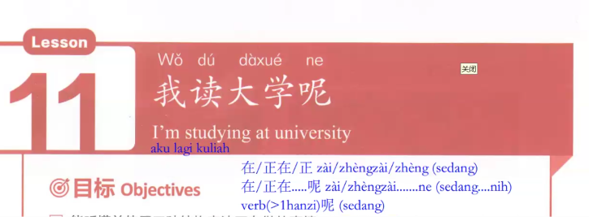
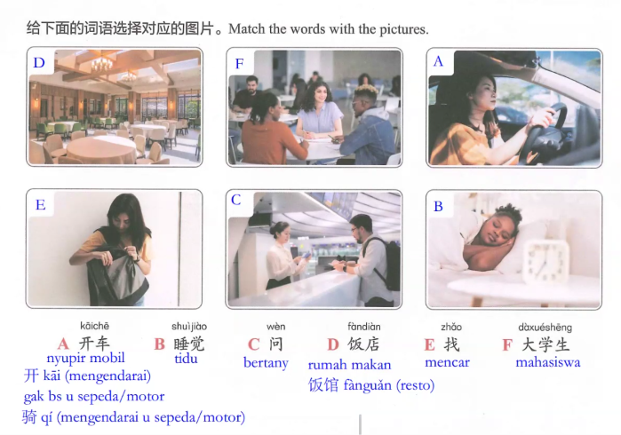
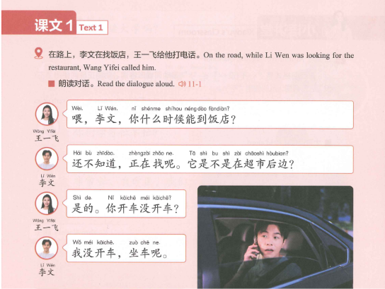
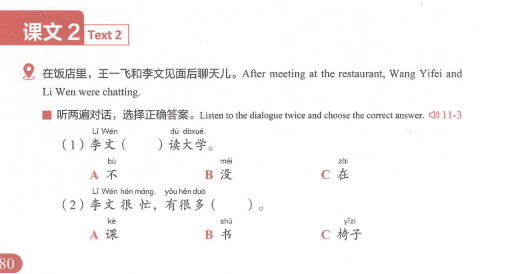
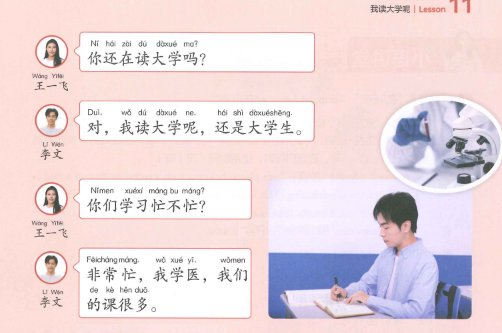
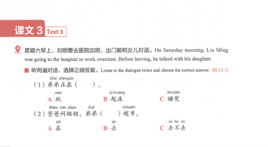
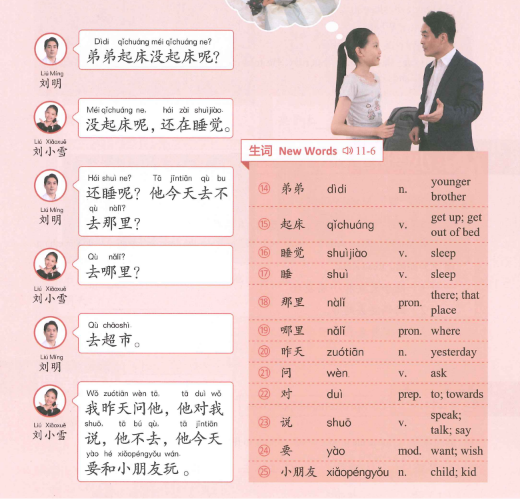
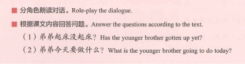
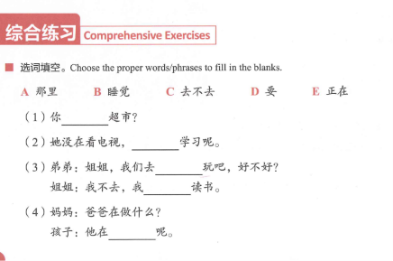
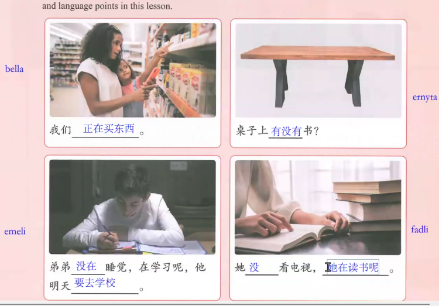

Latihan percakapan · 对话练习

Arti: "Saya sedang kuliah / I'm studying at university."
Kata 读大学 (dú dàxué) berarti menempuh pendidikan di perguruan tinggi (kuliah), dan partikel 呢 (ne) di akhir kalimat menegaskan suatu tindakan atau keadaan yang sedang berlangsung.
Pada bab ini, fokus utamanya adalah menyatakan kegiatan yang sedang berlangsung (Continuous Aspect / Progressive Action / "Sedang...") dalam bahasa Mandarin:


Dalam bahasa Indonesia, kita sering bertanya dengan gaya: "Pergi gak pergi?", "Bagus gak bagus?", "Mau atau tidak?".
Di bahasa Mandarin, caranya sangat sederhana: sebut kata positifnya, lalu sebut bentuk negatifnya. Jika sudah memakai pola ini, tidak boleh lagi memakai kata tanya 吗 (ma) di ujung kalimat!


Kata keterangan waktu 在 (zài) atau 正在 (zhèngzài) diletakkan sebelum kata kerja untuk menyatakan bahwa suatu tindakan sedang berlangsung (seperti akhiran -ing dalam bahasa Inggris atau kata "sedang/lagi" dalam bahasa Indonesia).




